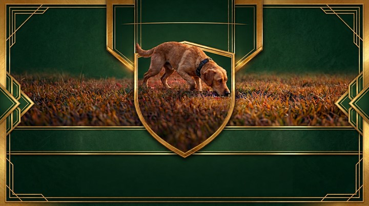

FCI-StöPr 1–3
Alle Teilnehmenden starten an zwei aufeinanderfolgenden Tagen. Pro Prüfungsstufe sind höchstens 50 Starter vorgesehen.
Offizielle Vorankündigung
Die wichtigsten Eckdaten zum Bewerb sind bestätigt. Genauere organisatorische Informationen werden in den kommenden Monaten laufend ergänzt.
Über den Cup
Der Internationale FCI-StöPr Wettbewerb 2027 bringt Teams aus verschiedenen Ländern zu zwei aufeinanderfolgenden Bewerbstagen in Villach zusammen. Ausgetragen werden die Prüfungsstufen FCI-StöPr 1 bis 3 mit Einzel- und Mannschaftswertung.

Bewerbsinformationen
Alle Teilnehmenden starten an zwei aufeinanderfolgenden Tagen. Pro Prüfungsstufe sind höchstens 50 Starter vorgesehen.
Teilnahmeberechtigt sind Mitglieder eines FCI-angeschlossenen oder anerkannten nationalen Verbandes. Ein Hundeführer startet für ein Land und mit einem Hund; eine Zuchtbucheintragung ist nicht zwingend.
Pro Land gelten drei Starts in FCI-StöPr 1, drei in FCI-StöPr 2 und fünf in FCI-StöPr 3. Jeder Verband kann zusätzlich zwei Reserveteilnehmende melden.
Alle Hunde werden tierärztlich kontrolliert. Kranke oder verletzte Hunde sind ausgeschlossen; Tierschutzverstöße, Manipulation und Doping führen zur sofortigen Disqualifikation.
Die namentliche Meldung erfolgt gesammelt durch den nationalen Verband. Vor dem Bewerb ist ein Leistungsheft oder, falls national nicht ausgestellt, eine elektronische Leistungskarte vorzulegen.
Gewertet werden Einzel- und Länder-Mannschaften. Für die Mannschaftswertung zählen die besten positiven Ergebnisse je Stufe; mindestens zwei positive Ergebnisse sind erforderlich.
Österreichisches Team
Die bisher veröffentlichte österreichische Übersicht nennt drei positive Regionalcup-Ergebnisse und genügend Punkte für die ÖKV-Leistungssiegerprüfung Stöbern als Grundlage.
Mindestens drei positive Ergebnisse im Regionalcup erreichen.
FCI-StöPr 1 und 2: jeweils einmal starten. FCI-StöPr 3: zweimal starten.
3 Startplätze in FCI-StöPr 1, 3 in FCI-StöPr 2 und 5 in FCI-StöPr 3.
Organisation
Maria Gailerstraße 11
9500 Villach
ZVR-Zahl 185947851
Namen und Funktionen werden nach der offiziellen Bestellung veröffentlicht.
Ansprechpersonen und Zuständigkeiten werden vor der Veranstaltung veröffentlicht.
Impressionen
Vorhandenes, freigegebenes Bildmaterial. Weitere Sportfotos werden ergänzt.